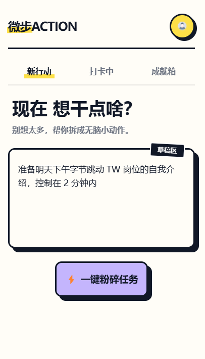
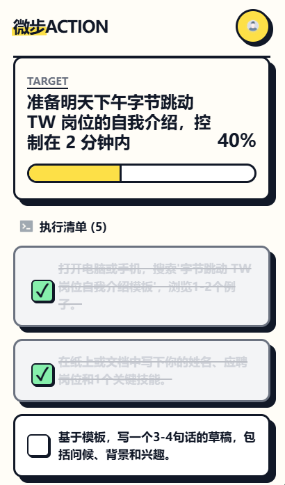

微步 ACTION · 用户文档
把那个拖了好久的大计划，变成现在就能开始的小行动。
项目概览
- 项目类型： C 端小程序用户文档 + 开发者 API 文档
- 文档风格： 波普手帐风（Voice & Tone 主动设计）
- 受众： 终端用户（User Guide）+ 前后端开发者（API Reference）
- 工具链： Markdown · GitHub · MkDocs · GitHub Actions
1. 关于小程序
1.1 核心价值：五步拆解法
你有没有过这种感觉——明明知道要做，就是迟迟不想开始？
不是因为懒，而是因为那件事太大了，大到不知道从哪里下手。脑子里一片模糊，然后就这样又拖了一天。
任务拆解小程序就是为这个时刻而生的。你只需要把那个让你头疼的大计划丢进来，AI 会在几秒内把它切成五个足够微小、立刻就能行动的小步骤——小到你看完会说"这个我现在就能做"。
每完成一步打一个勾，进度条往前走一格，最后解锁专属勋章和积分奖励。从"不想开始"到"已经完成"，就这么简单。
适合人群： - 面对大任务时容易拖延的人； - 想把目标拆成每日行动的学生或职场人； - 想用 AI 辅助整理计划的人； - 喜欢进度条、勋章、积分反馈的人； - 需要一点启动感和正反馈的人。
2. 快速上手
🚀 只需三步，把那个拖了好久的大计划，变成现在就能开始的小行动。
2.1 输入并拆解首个任务
第一步：给目标一个"家"
打开小程序，点击页面中央的输入框，写下那个让你头疼的大计划。
✏️ Tip：输入越具体，拆解越精准！
输入示例 效果 "写论文" 太模糊，AI 不好下手 "写论文第二章的文献综述" 具体清晰，五步拆解直接到位 输入公式： 具体任务 + 时间范围 + 当前状态或限制条件
例：明天上午 10 点前，整理毕业论文答辩 PPT 的前三页逻辑，目前只有一个粗略提纲。
点击 开始拆解 后，AI 会生成五个微小步骤。

▲ 在魔法输入框输入你的目标
2.2 见证成就：勾选完成项
五个小步骤会以卡片形式呈现在你面前，每张卡片旁边都有一个 ☐ checkbox。
完成一步后，点击对应的 checkbox，它会变成 ☑，进度条也会随之更新。每一个勾，都是你战胜拖延的证明。

▲ 勾选步骤后进度条同步更新
2.3 得到积分奖励
五个步骤全部打勾后，恭喜界面会弹出，同时你将获得本次任务的积分奖励 🎉
积分会自动累积到你的成就系统中，可在任务与成就页面随时查看。
3. 任务与成就管理
每一次拆解都留有痕迹，每一格进度都算数。这里是你的专属战绩板。
3.1 重新生成任务
如果 AI 拆解结果不太对味，点击右上角的重新生成按钮即可。
Tip： 想要更好结果，先升级你的输入：
- "准备面试" → "准备明天下午字节跳动 TW 岗位自我介绍，控制在 2 分钟" 输入越精准，AI 拆解出来的步骤就越贴合你的实际情况。
3.2 进度与勋章
点击底部导航栏的成就页面，你会看到两个区域：
进度看板显示正在进行的任务和完成情况。
勋章墙记录历史完成情况，每完成一项解锁勋章。
积分有什么用？ 积分目前用于解锁更多个性化的勋章样式，让你的成就墙越来越好看。后续版本将持续更新更多玩法，敬请期待！
4. 常见问题 FAQ
4.1 如何得到更高质量的拆解？
输入越具体，AI 拆解越贴近实际可执行步骤。
参考输入公式：具体任务 + 时间范围 + 当前状态或限制条件
例：明天上午 10 点前，整理好毕业论文答辩 PPT 的前三页逻辑框架，目前只有一个粗略提纲。
4.2 如何修改已拆解的任务？
本小程序目前不支持对单个步骤进行编辑。如果拆解结果不理想，有两个选择：
- 点击任务卡片右上角的重新生成按钮，AI 会基于原始输入重新给出一套方案。
- 返回首页，在魔法输入框中重新输入一个更具体的描述，开始一次新的拆解。
4.3 我的任务数据会丢失吗？
不会。所有任务记录（包括进行中和已完成的）都保存在你的微信账号下，退出小程序后数据不会清空，可在任务与成就页面随时查看完整历史。
注意： 数据同步依赖网络连接。无网络环境下历史记录可能暂时无法加载，联网后将自动恢复。
5. 隐私说明
- 你输入的任务描述仅用于 AI 拆解计算，不会被用于模型训练或对外共享。
- 使用语音输入功能时，小程序需要申请麦克风权限，你可以随时在微信设置中关闭。
- 所有数据通过加密传输（HTTPS），存储于与你微信账号绑定的云端空间。
文档集入口
如需进一步了解，可以点击：
文档版本
| 版本 | 日期 | 说明 |
|---|---|---|
| v1.0.0 | 2026-04-17 | 初始版本，含用户手册、使用流程、FAQ 与隐私说明 |
本文档遵循 Docs-as-Code 理念，随功能迭代持续更新。
© 2026 alison2fun · MIT License